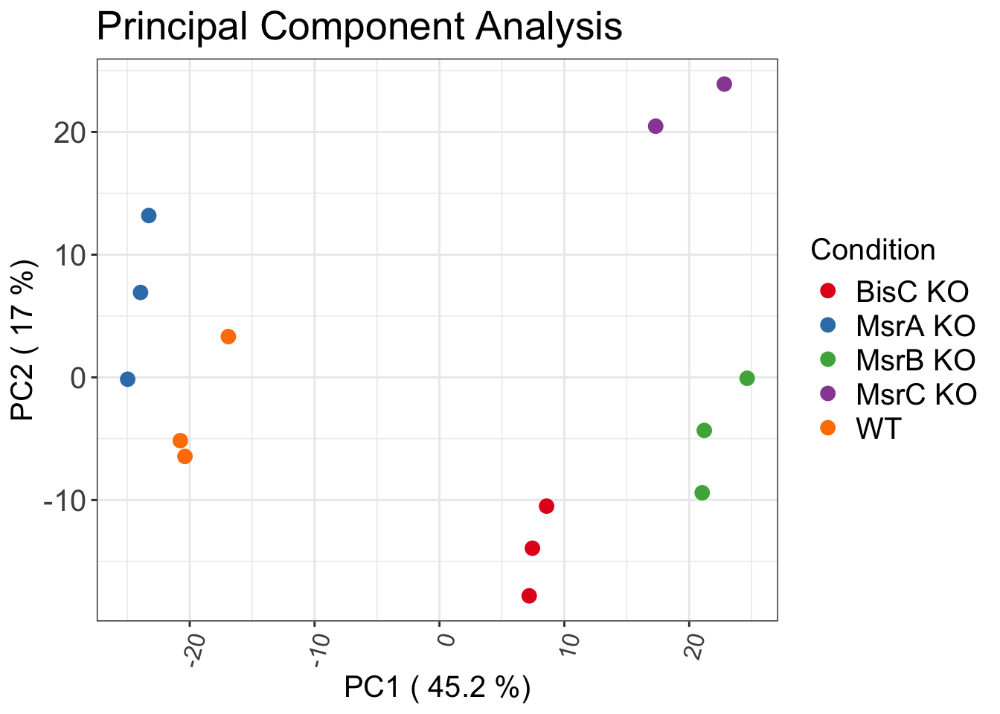
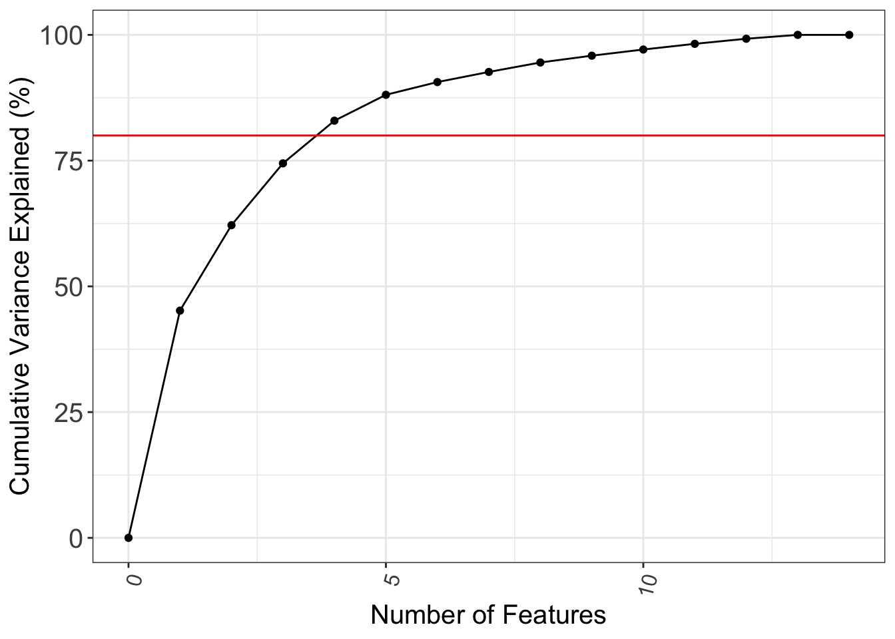

5.2 Replicate Comparisons
In order to properly ensure our experimental design was well thought out, we should evaluate how all of our samples compare to each other. We will be doing this several different ways:
Clustering: Cluster all our samples according to the Spearman correlation of our overall protein abundances and draw a heatmap of those correlations.
- Ideally, all of the replicates from the same group will be more clustered with the other reps from the same group than with any samples from other groups
Principal Component Analysis (PCA): A dimensionality reduction technique that can be used for extracting information from high-dimensional space (i.e., a biological experiment where variation can stem from a large number of variables) by projecting it into a lower-dimensional sub-space (i.e. a very few number of components that can readily be quantified and, ideally, subsequently identified). Dimensions are nothing but features that represent the data.
Ideally, all of the replicates from the same group will be more clustered with the other reps from the same group than with any samples from other groups
- Indicates that the major sources of variation are coming from the biological groups than from any source of variation that was applied across all the samples (e.g., sample prep or data acquisition)
5.2.1 Sample Heatmap and Hierarchical Clustering
5.2.1.1 Prepare the Heatmap Annotation
Set the Heatmap Annotation Scheme
To properly connect the heatmap to our samples and groups, we need to get just a list of each sample and the group it belongs too (akin to the metadata).
It also needs to samples as row names (Currently is sample name in each row with the column name ‘sample’).
smpl_htmp_annotation <- sample_level %>%
ungroup() %>%
dplyr::rename(Condition = 'group') %>%
distinct(sample,
Condition) %>%
tibble::column_to_rownames(var = 'sample')
smpl_htmp_annotation## Condition
## bisC1 BisC KO
## bisC2 BisC KO
## bisC3 BisC KO
## msrA1 MsrA KO
## msrA2 MsrA KO
## msrA3 MsrA KO
## msrB1 MsrB KO
## msrB2 MsrB KO
## msrB3 MsrB KO
## msrC1 MsrC KO
## msrC3 MsrC KO
## WT1 WT
## WT2 WT
## WT3 WT5.2.1.1.1 {-} Define the Heatmap Variables
## [1] "BisC KO" "MsrA KO" "MsrB KO" "MsrC KO" "WT"## [1] 5smpl_htmp_conditions_colors <- c(brewer.pal(n_smpl_htmp_conditions, 'Set1'))
smpl_htmp_conditions_colors## [1] "#E41A1C" "#377EB8" "#4DAF4A" "#984EA3" "#FF7F00"## BisC KO MsrA KO MsrB KO MsrC KO WT
## "#E41A1C" "#377EB8" "#4DAF4A" "#984EA3" "#FF7F00"## [[1]]
## BisC KO MsrA KO MsrB KO MsrC KO WT
## "#E41A1C" "#377EB8" "#4DAF4A" "#984EA3" "#FF7F00"## $Condition
## BisC KO MsrA KO MsrB KO MsrC KO WT
## "#E41A1C" "#377EB8" "#4DAF4A" "#984EA3" "#FF7F00"5.2.1.2 Calculate the Spearman Rank Correlation
correlation <- sample_level %>%
ungroup() %>%
distinct(sample, protein_group, log2_abundance) %>%
pivot_wider(names_from = sample, values_from = log2_abundance) %>%
column_to_rownames(var = 'protein_group') %>%
cor(method = 'spearman', use = 'complete.obs')
correlation## bisC1 bisC2 bisC3 msrA1 msrA2 msrA3 msrB1
## bisC1 1.0000000 0.9910909 0.9964607 0.9737440 0.9675346 0.9784896 0.9822822
## bisC2 0.9910909 1.0000000 0.9916931 0.9741294 0.9709350 0.9739331 0.9894585
## bisC3 0.9964607 0.9916931 1.0000000 0.9760637 0.9696315 0.9797703 0.9835149
## msrA1 0.9737440 0.9741294 0.9760637 1.0000000 0.9940061 0.9956424 0.9626272
## msrA2 0.9675346 0.9709350 0.9696315 0.9940061 1.0000000 0.9916899 0.9626075
## msrA3 0.9784896 0.9739331 0.9797703 0.9956424 0.9916899 1.0000000 0.9618618
## msrB1 0.9822822 0.9894585 0.9835149 0.9626272 0.9626075 0.9618618 1.0000000
## msrB2 0.9791197 0.9856300 0.9799972 0.9600962 0.9620811 0.9585315 0.9972736
## msrB3 0.9880443 0.9860960 0.9878796 0.9622888 0.9603413 0.9654635 0.9947167
## msrC1 0.9770990 0.9826499 0.9807328 0.9685816 0.9681547 0.9643686 0.9856043
## msrC3 0.9701011 0.9708217 0.9741244 0.9570836 0.9568288 0.9526840 0.9782921
## WT1 0.9769967 0.9806994 0.9788482 0.9912453 0.9904464 0.9895408 0.9720948
## WT2 0.9805962 0.9803929 0.9825572 0.9902303 0.9855239 0.9920765 0.9681325
## WT3 0.9813094 0.9758787 0.9819353 0.9901788 0.9857338 0.9930630 0.9644449
## msrB2 msrB3 msrC1 msrC3 WT1 WT2 WT3
## bisC1 0.9791197 0.9880443 0.9770990 0.9701011 0.9769967 0.9805962 0.9813094
## bisC2 0.9856300 0.9860960 0.9826499 0.9708217 0.9806994 0.9803929 0.9758787
## bisC3 0.9799972 0.9878796 0.9807328 0.9741244 0.9788482 0.9825572 0.9819353
## msrA1 0.9600962 0.9622888 0.9685816 0.9570836 0.9912453 0.9902303 0.9901788
## msrA2 0.9620811 0.9603413 0.9681547 0.9568288 0.9904464 0.9855239 0.9857338
## msrA3 0.9585315 0.9654635 0.9643686 0.9526840 0.9895408 0.9920765 0.9930630
## msrB1 0.9972736 0.9947167 0.9856043 0.9782921 0.9720948 0.9681325 0.9644449
## msrB2 1.0000000 0.9941917 0.9856884 0.9823789 0.9700537 0.9631506 0.9617701
## msrB3 0.9941917 1.0000000 0.9815702 0.9780538 0.9705371 0.9699939 0.9695057
## msrC1 0.9856884 0.9815702 1.0000000 0.9929894 0.9730951 0.9674360 0.9656391
## msrC3 0.9823789 0.9780538 0.9929894 1.0000000 0.9614495 0.9531208 0.9553865
## WT1 0.9700537 0.9705371 0.9730951 0.9614495 1.0000000 0.9950594 0.9944189
## WT2 0.9631506 0.9699939 0.9674360 0.9531208 0.9950594 1.0000000 0.9967624
## WT3 0.9617701 0.9695057 0.9656391 0.9553865 0.9944189 0.9967624 1.00000005.2.1.3 Create Dendrograms for the Heatmap
distance <- dist(correlation)
hierachical_clustering <- hclust(distance)
dendrogram <- as.dendrogram(hierachical_clustering)
dendrogram_row <- seriate_dendrogram(dendrogram, distance, method = "OLO")
dendrogram_column <- rotate(
dendrogram_row,
order = rev(labels(distance)[get_order(as.hclust(dendrogram_row))])
)5.2.1.4 Create the Heatmap
Create the Heatmap
smpl_htmp_list <- Heatmap(
correlation,
cluster_rows = as.hclust(dendrogram_row),
cluster_columns = as.hclust(dendrogram_column),
show_row_dend = FALSE,
top_annotation = smpl_htmp_complex_annotation,
name = 'Spearman',
column_title = "Correlation-based Hierachical Clustering",
column_title_gp = gpar(fontsize = 15,
fontface = 'bold'),
col = brewer.pal(9, 'YlGnBu'),
rect_gp = gpar(col = 'grey',
lwd = 0.25),
heatmap_legend_param = list(legend_height = unit(10, 'cm'),
legend_gp = gpar(fontsize = 11),
title =
'Spearman
Correlation'),
column_names_gp = gpar(fontsize = 10),
row_names_gp = gpar(fontsize = 10),
)5.2.2 Principal Component Analysis (PCA)
How does a PCA work?
We calculate a matrix that summarizes how all of our variables (i.e., the abundance of each protein in each sample) relate to one another.
Break this matrix down into two separate aspects: direction and magnitude (Vectorman would be so proud). We can then understand the directions (the components) of our data and its magnitude (i.e., how “important” each direction is).
5.2.2.1 Prepare the PCA Data
As the description above implies, we need to make a matrix of the magnitude of each direction (component). To do this, we first just need to make a matrix of our protein abundances, which we’ll be using our sample comparison data frame we made at the beginning of this chapter.
pca_input <- sample_level %>%
ungroup() %>%
distinct(sample, protein_group, log2_abundance) %>%
group_by(sample, protein_group) %>%
summarise(intensity = sum(log2_abundance),
.groups = 'drop') %>% #If we have multiple protein_groups per sample, we are simply going to add them together
pivot_wider(names_from = sample, values_from = intensity) %>%
drop_na() %>%
dplyr::select(-protein_group) %>%
t() #Make the data into a matrix
pca_input[,1:6]## [,1] [,2] [,3] [,4] [,5] [,6]
## WT1 16.40265 29.84320 29.27740 25.27348 26.80704 28.79245
## WT2 16.56684 29.72218 29.16925 25.34192 26.93438 29.66477
## WT3 16.16356 29.71794 29.18393 25.33344 26.76167 29.70755
## bisC1 19.29890 29.76450 29.21365 25.28977 26.86401 30.06089
## bisC2 17.79146 29.68652 29.14412 25.37404 26.70054 29.69404
## bisC3 19.81199 29.66457 29.08652 25.31138 26.77536 29.52391
## msrA1 18.63035 29.54552 29.05862 25.07095 26.95400 28.81062
## msrA2 19.50781 29.75493 29.29593 25.09613 26.86942 28.30774
## msrA3 18.33279 29.63141 29.17300 25.21888 26.78988 29.44777
## msrB1 16.30386 29.71828 29.40907 25.14552 26.99481 28.64801
## msrB2 16.35503 29.76270 29.53059 25.12708 26.94525 28.70138
## msrB3 16.74360 29.79364 29.31457 25.24340 26.97308 29.40933
## msrC1 16.10502 29.56115 29.52545 24.82127 26.99538 27.83707
## msrC3 16.47890 29.56833 29.50605 24.83112 27.14346 27.60847We are then going to make a data frame containing our metadata (i.e., the group name of each sample) so that we can more easily modify the plots we plan to make in a little bit.
5.2.2.2 Perform the Principal Component Analysis
We are now going to use a function from the stats package (prcomp()) to perform the PCA and obtain the values for each component.
5.2.2.3 Extract the PCA Results
prcomp() outputs a matrix. To make the data more amenable to downstream transformations and plotting, we are going to make it into a data frame and then add back in our metadata (genotypes).
pca_df <- as.data.frame(pca$x) %>%
mutate(sample := factor(row.names(.))) %>%
left_join(pca_annotation, by = 'sample')
pca_df## PC1 PC2 PC3 PC4 PC5 PC6
## 1 -16.906548 3.32325409 2.921688 14.3547587 5.47129923 -4.941773
## 2 -20.382015 -6.44630690 -1.108488 13.1113053 1.77930938 5.384817
## 3 -20.753275 -5.16049381 -2.901976 13.5532112 -6.30585041 -2.818930
## 4 7.185818 -17.80859098 -12.721980 -6.4402290 -4.59836119 -4.761486
## 5 8.580646 -10.49952635 -6.697135 -3.9019845 17.84250500 1.308918
## 6 7.444187 -13.92762818 -15.021720 -5.6244054 -2.26444733 -1.938879
## 7 -23.940167 6.91877000 2.303276 -9.6850737 0.03459036 6.478160
## 8 -23.278212 13.18804051 9.030241 -12.0353785 2.79281477 -9.527258
## 9 -24.971915 -0.15296697 2.160799 -10.2680016 -6.33314364 5.614090
## 10 21.208217 -4.32798924 14.564041 0.2130081 3.64888688 2.794445
## 11 24.642181 -0.07563843 17.817416 0.5245061 0.16852276 -2.925507
## 12 21.041171 -9.40628499 11.880274 1.2809917 -9.46829242 2.376445
## 13 17.316435 20.47152182 -10.140553 2.2168077 3.05305924 4.731719
## 14 22.813478 23.90383943 -12.085883 2.7004840 -5.82089262 -1.774762
## PC7 PC8 PC9 PC10 PC11 PC12
## 1 3.9204485 2.90998892 3.20435698 2.46450615 1.5517162 -4.9930635
## 2 -3.6983410 -2.81856497 0.17300450 -3.15242438 -2.8520878 4.4808846
## 3 -0.3313035 0.00873258 -3.41741573 0.03136909 1.3818902 0.8728621
## 4 -2.4130813 5.83610914 -2.82241670 3.40684823 2.1090912 2.5206465
## 5 2.0884419 -4.61416490 -2.09579615 3.63250853 -1.3633704 0.2452268
## 6 1.7786139 -1.13655432 4.59112323 -7.15875471 -1.4214928 -3.2738581
## 7 7.6426492 7.44061276 -0.12696757 -0.49853740 -2.0627800 1.8421085
## 8 -4.9354411 -1.73084386 2.47106119 -0.35141192 -1.9841062 2.2275335
## 9 -1.6392495 -6.19588492 -2.41865950 1.39992877 4.1101380 -4.2941663
## 10 -0.9537047 1.25647761 4.33233974 -1.77072498 7.4072867 2.9197293
## 11 1.6955614 0.54108120 -7.54750911 -4.28199476 -1.8527727 -1.8872387
## 12 -0.5804971 -1.20873058 4.16348249 5.37247244 -5.3185011 -0.8195961
## 13 -8.5010728 4.87703043 -0.54722689 0.01754260 -0.8574769 -2.9298609
## 14 5.9269760 -5.16528907 0.04062353 0.88867234 1.1524657 3.0887924
## PC13 PC14 sample group
## 1 -2.9799665 1.597845e-13 WT1 WT
## 2 -3.9353719 1.601280e-13 WT2 WT
## 3 6.4930274 1.593465e-13 WT3 WT
## 4 -3.1467344 1.588115e-13 bisC1 BisC KO
## 5 1.9698425 1.595299e-13 bisC2 BisC KO
## 6 0.9271069 1.591619e-13 bisC3 BisC KO
## 7 0.9133519 1.583047e-13 msrA1 MsrA KO
## 8 0.5871943 1.609948e-13 msrA2 MsrA KO
## 9 -1.4559231 1.589025e-13 msrA3 MsrA KO
## 10 1.1680879 1.587458e-13 msrB1 MsrB KO
## 11 -1.3797664 1.598288e-13 msrB2 MsrB KO
## 12 0.8987704 1.590826e-13 msrB3 MsrB KO
## 13 1.1239894 1.576568e-13 msrC1 MsrC KO
## 14 -1.1836086 1.587354e-13 msrC3 MsrC KOOne other important piece of data prcomp() provides us is the standard deviation of the total experiment “explained” by each component. By adding up enough of our components, the variation of our experiment should eventually be completely explained.
This information is stored in pca$sdev, which we will extract and again make into a data frame.
## pca$sdev
## 1 2.032677e+01
## 2 1.246566e+01
## 3 1.060359e+01
## 4 8.806650e+00
## 5 6.859006e+00
## 6 4.814363e+00
## 7 4.292032e+00
## 8 4.147293e+00
## 9 3.516503e+00
## 10 3.345701e+00
## 11 3.216724e+00
## 12 3.045563e+00
## 13 2.648766e+00
## 14 1.653466e-13We will then measure the percent variace each component captures from our dataset:
1- Retrieve the standard deviation of each component
2- Square the standard deviation to calculate the eigenvalues (the variance of each component, pca$sdev^2)
3- Calculate the total variance across all components combined (`sum(pca$sdev^2))
4- Divide each component’s variance by the totalo variance to get a proportion (/)
5- Convert the proporation into a percentage (*100)
pca_sdev_df <- pca_sdev_df %>%
mutate(percent_variance = (pca$sdev^2/sum(pca$sdev^2)*100),
dimension = row.names(.)) %>%
mutate(dimension = factor(.data$dimension,
levels = unique(str_sort(.data$dimension,
numeric = TRUE))))
pca_sdev_df## pca$sdev percent_variance dimension
## 1 2.032677e+01 4.517541e+01 1
## 2 1.246566e+01 1.699009e+01 2
## 3 1.060359e+01 1.229338e+01 3
## 4 8.806650e+00 8.479823e+00 4
## 5 6.859006e+00 5.143842e+00 5
## 6 4.814363e+00 2.534212e+00 6
## 7 4.292032e+00 2.014147e+00 7
## 8 4.147293e+00 1.880593e+00 8
## 9 3.516503e+00 1.352033e+00 9
## 10 3.345701e+00 1.223882e+00 10
## 11 3.216724e+00 1.131339e+00 11
## 12 3.045563e+00 1.014146e+00 12
## 13 2.648766e+00 7.671008e-01 13
## 14 1.653466e-13 2.989205e-27 145.2.2.4 Plot the PCA Results
Now that we have the components measures and total variance, we can make our PCA plots.
We will be making three total plots.
1- A static PCA plot each with the first component (PC1) as the x-axis and the second component (PC2) as the y-axis, with each genotype having a different color
2- A dynamic PCA plot each with the first component (PC1) as the x-axis and the second component (PC2) as the y-axis, again with each genotype having a different color.
- Now when you hover over each point, a pop-up box will appear, showing the sample matching to that point. This can be used to see which specific samples might be considered an outlier of the rest of the group, if there are any.
3- A Scree plot: a simple line segment plot that show the eigenvalues for each individual principal component. The individual components are the x-axis eigenvalues are the y-axis.
- The main purpose of a scree plot is to determine the number of principal components to retain in downstream statistical analyses. Generally speaking, if you need more than 3 or 4 principal components to describe ~80% of your variance, a PCA might not be the best method to visualize your data, instead you might want to look into a more advanced dimensionality reduction technique (e.g., t-SNE or UMAP).
Static PCA Plot
ggplot(data = pca_df,
mapping = aes(x = !!rlang::sym('PC1'), y = !!rlang::sym('PC2'),
col = group, label = sample)) +
geom_point(size = 3) +
labs(
title = "Principal Component Analysis",
x = paste(
'PC1', "(",
round(
pca_sdev_df$percent_variance[pca_sdev_df$dimension==str_extract('PC1',
"\\d")],
1), "%)"
),
y = paste(
'PC2', "(",
round(
pca_sdev_df$percent_variance[pca_sdev_df$dimension==str_extract('PC2',
"\\d")],
1), "%)"
),
color = "Condition"
) +
scale_color_manual(values = brewer.pal(n_distinct(pca_annotation$group),
'Set1')) +
plot_theme
Interactive PCA Plot
ggplotly(ggplot(data = pca_df,
mapping = aes(x = !!rlang::sym('PC1'), y = !!rlang::sym('PC2'),
col = group, label = sample)) +
geom_point(size = 3) +
labs(
title = "Principal Component Analysis",
x = paste(
'PC1', "(",
round(
pca_sdev_df$percent_variance[pca_sdev_df$dimension==str_extract('PC1',
"\\d")],
1), "%)"
),
y = paste(
'PC2', "(",
round(
pca_sdev_df$percent_variance[pca_sdev_df$dimension==str_extract('PC2',
"\\d")],
1), "%)"
),
color = "Condition"
) +
scale_color_manual(values = brewer.pal(n_distinct(pca_annotation$group),
'Set1')) +
plot_theme)Scree Plot
ggplot(data = pca_sdev_df %>%
add_row(`pca$sdev` = as.double(0),
percent_variance = as.double(0),
dimension = as.factor(0),
.before = 1) %>%
mutate(cumulative_variance = cumsum(percent_variance),
dimension = as.numeric(as.character(dimension))),
mapping = aes(x = dimension,
y = cumulative_variance,
group = 1)) +
geom_line() +
geom_point() +
geom_hline(yintercept = 80, color = 'red') +
labs(x = "Number of Features",
y = "Cumulative Variance Explained (%)") +
plot_theme
From all of the above plots, we can pretty confidently say our experiment is pretty sound and all the reps for each of our genotypes accurately represent each genotype.
With this confidence, we can now move ahead and see if there are any proteins, or groups of proteins that are differentially expressed between the different genotypes.